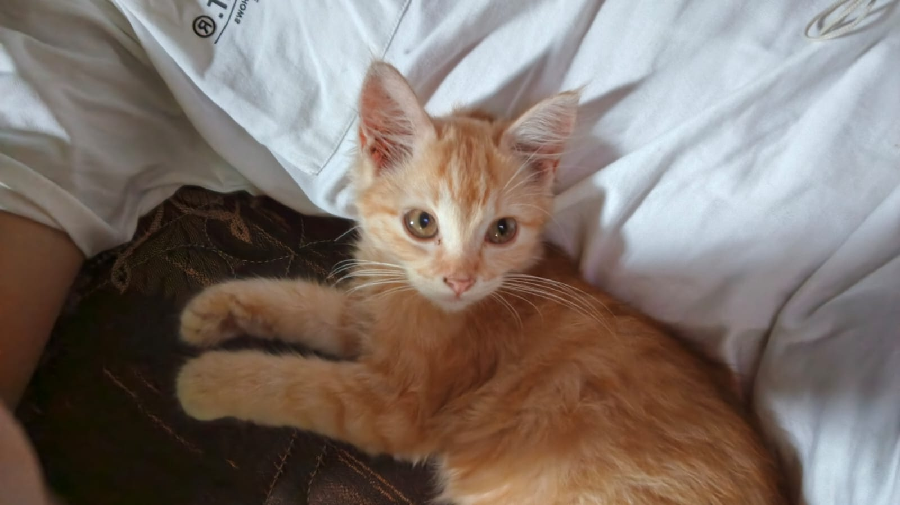

🚀 Pendaftaran Tahun Ajaran 2026/2027 Dibuka
Belajar Jadi Lebih


Belajar Jadi Lebih
Mudah & Seru
Bergabunglah dengan Bimbel Miss I. Kami menggunakan metode personal approach agar siswa tidak hanya menghafal, tapi memahami konsep.
Dipercaya oleh 100+ Siswa di Wonosobo

Hasil Tryout
Sangat Memuaskan